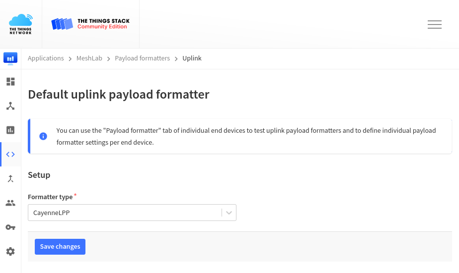

CayenneLPP
This section explain CayenneLPP (Low Power Protocol) which is used to encode data on sensor nodes into a size efficient format and decode it in the backend back for further processing.
Cayenne is a platform developed by myDevices Inc. offering custom dashboards for device monitoring, alerts and more1. They developed CayenneLPP2 and multiple open source implementation of that protocol exists35. The protocol allows a compromise between self describing data packets and size efficiency, which will be explained in the next section.
This sections below show three ways to encode node data to a binary format for sending over LoRa, a custom raw format, JSON and CayenneLPP. The example data is a temperature value of 18.6 degree Celsius, a battery voltage of 3.9V and a distance value of 43mm.
Encoding using raw Bits
The smaller a LoRaWAN packet is the less power is required to send it and the more airtime is available for other sensors. A simple solution would be just store all sensor data as binary fields one after another. The packet could have the following format:
1 | |
Representing floats in binary isn't trivial to instead a prevision can be defined. For temperature two float digits are enough, for battery voltage a single float digit is fine and dinstance is always a integer.
This means values can be multiple by 100 respectively 10. The temperature value
becomes 1860 and the voltage becomes 39. Both considering that measured
temperature will never be above 99.99 degree Celsius and batter voltage should
exceed 9.9V (4.2V really). For distance a maximum of 5000mm should be used.
To calculate the maximum bits needed data, the maximum values are converted to binary format the bit counted, easily possible with some Python:
1 2 3 4 5 6 7 8 9 10 11 12 13 | |
Above calculation shows that 14 Bits are needed for temperature, 7 for battery voltage and 13 for distance. Now the custom data format becomes more specific as shown below:
1 2 | |
Below we calculate the specific values and pad them with zeros.
1 2 3 4 5 6 | |
The resulting packet would look like this with a total size of 34 Bits.
1 2 | |
The receiving backend could decode this data by reading the first 14 Bits as integer and dividing the value by 100 to calculate the temperature, followed by reading Bit 15 until 21 as integer and dividing it by 10 to calculate the battery voltage. The remaining 13 Bit can be directly read as distance.
While this approach works and data is efficiently exchanged between sensor node and backend, the calculation is not trivial to understand. More problematic is the extendability of this approach: Newly added sensors may use a different set of sensors and therefore require data fields. As the exchanged data is just Bits, it's not possible to know what the data contains. In other words, the format is extremely static and ideally the data would be more self explaining so a backend would know what value it is decoding.
Encoding using JSON
The JSON format is extremely popular in web application to exchange all kinds of data. It is human readable, supports all our data types directly (float and integer) and allows to verbosely describe data fields. The example data could be decoded as below:
1 2 3 4 5 | |
As printed above, the format would take a total of 73 Bytes (584 Bits) which is nearly 20 times bigger than using the raw format. Even a slightly optimized version as shown below would still require 28 Bytes (224 Bits) meaning 7 times bigger.
1 | |
Encoding using CayenneLPP
CayenneLPP uses a compromise of both approaches, the data is very compact while being self descriptive. To archive that common measurement types are available with a 1 Byte data type descriptor and a 1 Byte data type channel (or ID). Each data type, be it temperature, GPS or relative humidity is described by a number between 0 and 255, a official reference implementation is available in the Cayenne Docs. Since all data types are based on IPSO data types other implementations support additional values, like voltage, altitude and distance4.
Adding those values on device is done by a creating a CayenneLPP frame and
adding values. More details are available in main.cpp
implementation, however below is an simplified example.
1 2 3 4 5 6 | |
The same is possible to do via Python using the pycayennelpp package5:
1 2 3 4 5 6 7 8 | |
The result are 14 Bytes and thereby half the size of using JSON. For
measurements which are not directly supported by the implementations, like
number of satelites for GPS measurements, it is possible to use the commands
addDigitalInput or addDigitalOutput (unsigned 32 Bit Integer) and
addAnalogInput or addAnalogOutput (float with 3 decimals).
Decoding in Backend
The receiving backend allows to decode incoming data before offering it via MQTT. This is very useful so different applications listening to the MQTT stream can directly process the decoded payload rather than implementing that per client, allowing as well to upgrade the communication used for nodes without modifying clients.
TheThingsNetwork offers to automatically decode CayenneLPP frames using the Payload Formatter menu entry.

However, since TheThingsNetwork uses the reference implementation of MyDevices
they don't support decoding some additional data types, like distance. If these
measurements are used it is possible to use a custom JavaScript decoder as
offered by ElectronicCats to be used directly in TheThingsNetwork. The
decoder.min.js can be pasted into the text field of the Payload
Formatter menu entry:
The
mindecoder version is required as TheThingsNetwork limits the total size of decoding scripts and the formated version exceeds that limit.

Used payload types
Within this project the following payload types and IDs are used.
| JSON value | description |
|---|---|
analog_in_1 |
rain mm/m |
analog_in_2 |
soil moisture |
digital_out_1 |
running software version (integer) |
temperature_1 |
temperature |
voltage_1 |
battery voltage |
distance_1 |
distance to sea level |